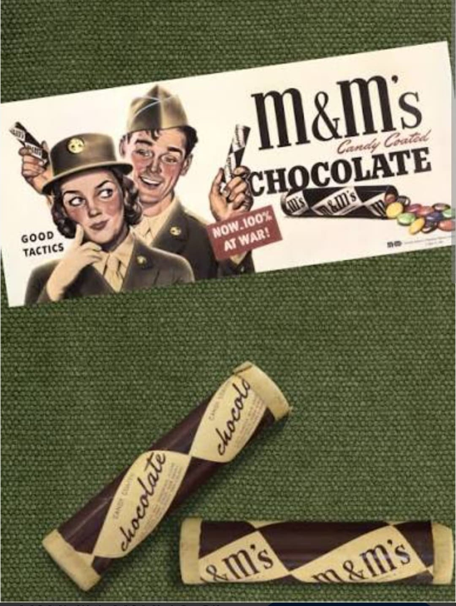
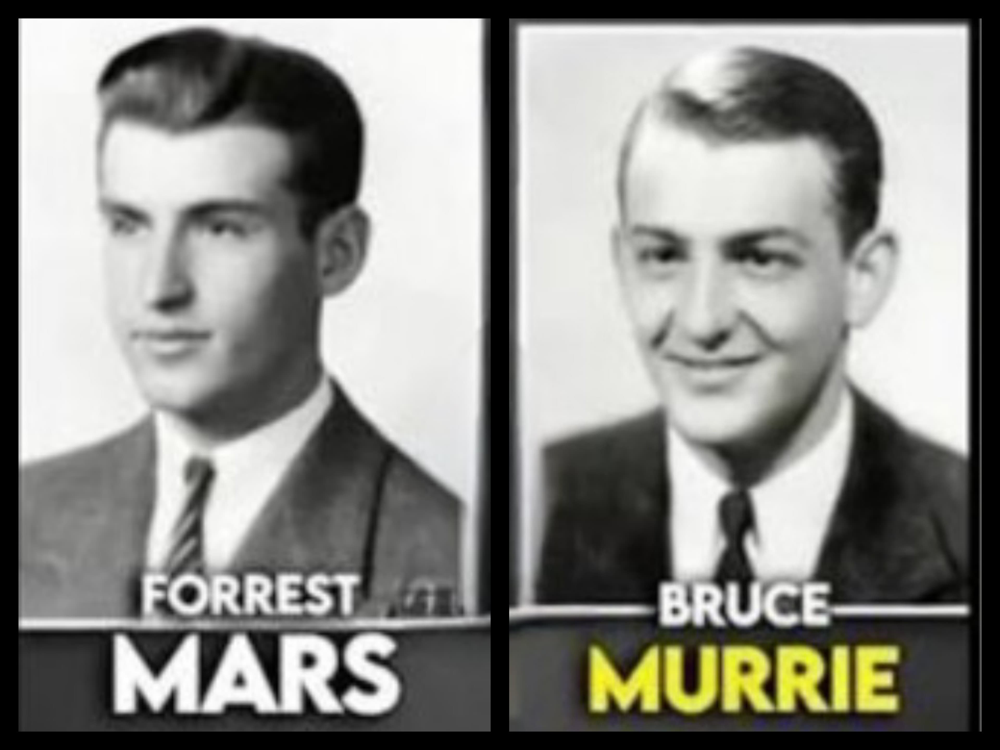
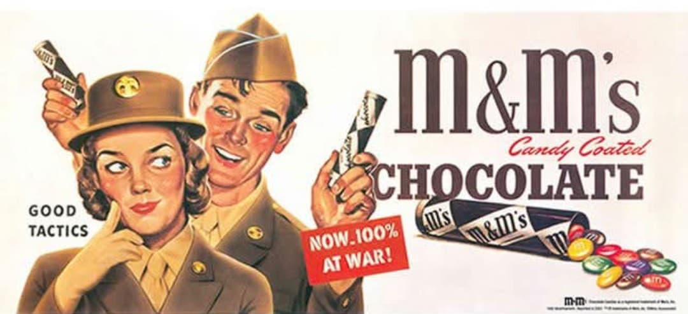
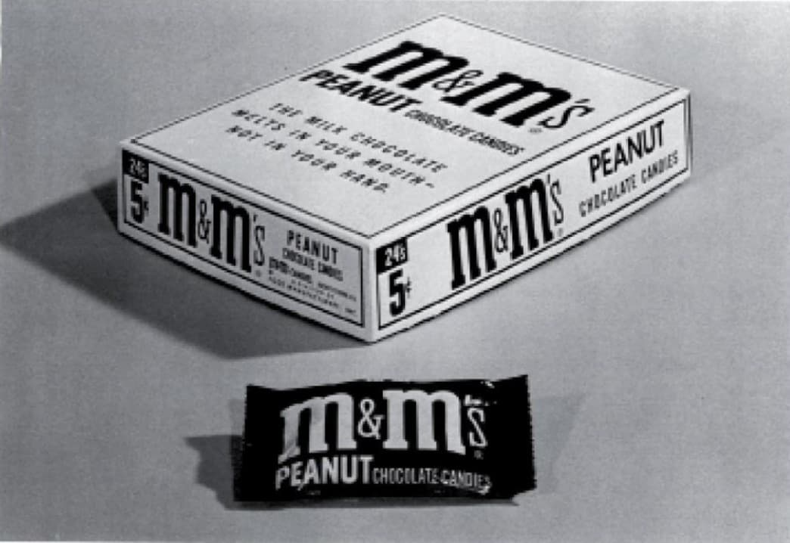

Histoire de la confiserie militaire créée pour ne pas fondre au front

Les M&M's (abréviation directe de Mars & Murrie) sont des confiseries composées de billes de chocolat enrobées d'une coquille de sucre durcie et colorée. Leur nom provient des initiales de leurs deux inventeurs et cofondateurs : Forrest Mars Sr. et Bruce Murrie.
Conçues spécifiquement en 1941 à la veille de l'entrée en guerre des États-Unis, ces friandises répondaient à un impératif logistique militaire absolu : **fournir du chocolat hautement énergétique aux soldats sans qu'il ne fonde** sous le soleil ou dans la chaleur des poches de treillis au front.
Pendant toute la durée de la Seconde Guerre mondiale, la totalité de la production a été réservée et distribuée exclusivement à l'armée américaine.
L'histoire de la marque repose sur l'association de deux figures industrielles majeures :
De cette alliance stratégique naît la société M&M Limited (pour **Mars & Murrie**).

Dès 1941, le Pentagone commande massivement ces bonbons pour les intégrer dans les rations de campagne (C-Rations et K-Rations).
À cette époque, les M&M's n'étaient pas conditionnés dans des sachets en plastique colorés, mais dans de petits **tubes cylindriques en carton rigide** faciles à glisser dans le paquetage militaire.

De l'Europe de l'Ouest aux îles du Pacifique, les soldats pouvaient ainsi consommer du chocolat en plein combat sans craindre la chaleur ou l'humidité.
À la fin de la guerre en 1945, les millions de soldats démobilisés rentrent aux États-Unis en ayant pris l'habitude de consommer ces bonbons au front.
En 1946, la production est ouverte au grand public et rencontre un immense succès. Le célèbre slogan publicitaire de la marque, « Fond dans la bouche, pas dans la main » (Melts in your mouth, not in your hand), fait directement référence à l'innovation militaire originelle de 1941.

Page du Musée HOP WW2 – M&M's et l'armée américaine